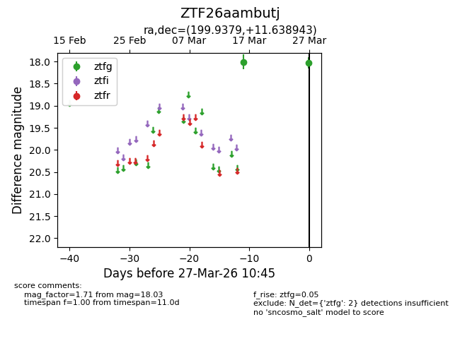
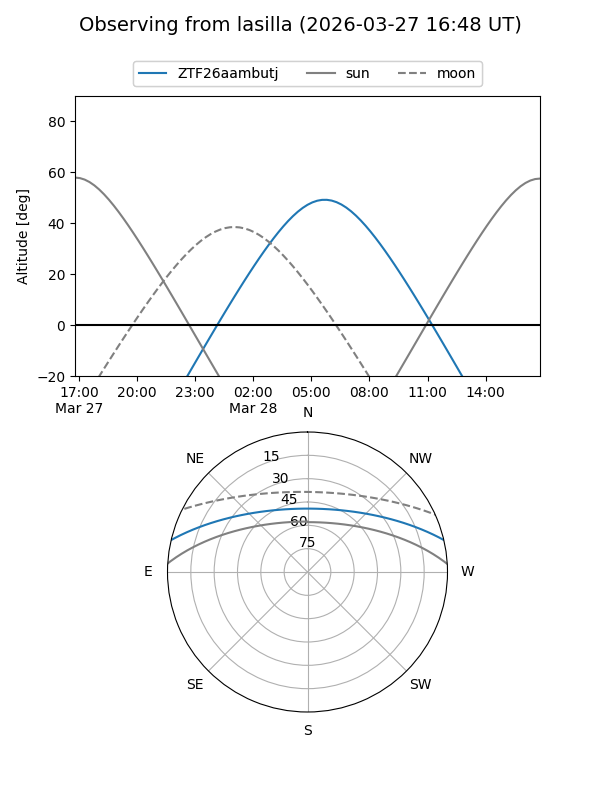
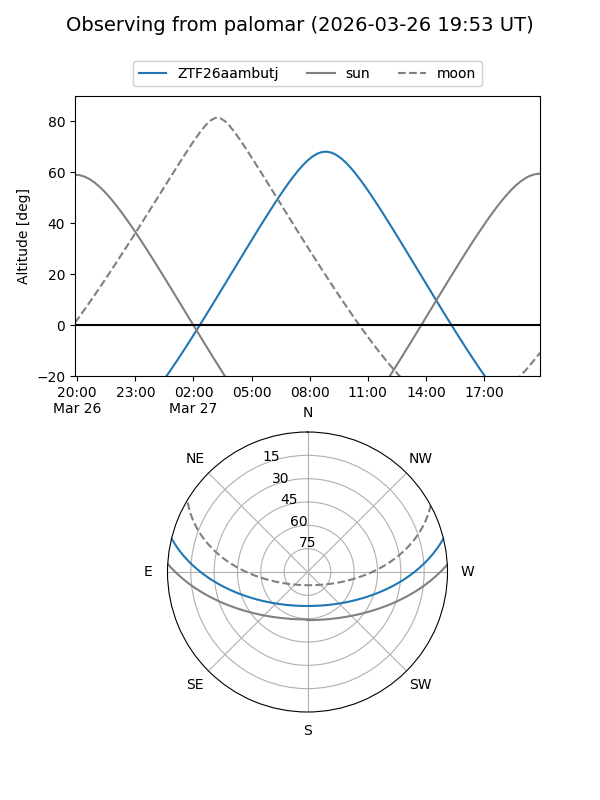

ZTF26aambutj
Target ZTF26aambutj at 2026-03-27 10:48
Aliases and brokers:
FINK: link
Lasair: link
ALeRCE: link
alt names
ZTF26aambutj (ztf,fink_ztf)
Coordinates:
equatorial (ra, dec) = 199.9379,+11.63894
equatorial (HMS+DMS) = 13:19:45.10,+11:38:20.20
galactic (l, b) = (327.5290,+73.14402)
Flags:
Photometry:
last ztfg=18.03
2 ztfg detections
Lightcurve

Visibility


Additional plots